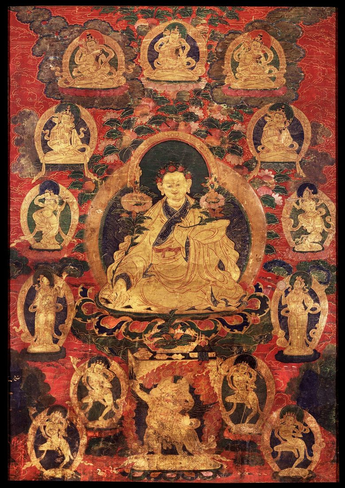

About Himalayan Brushwork
Himalayan Brushwork began with a simple observation: many people fall in love with thangkas long before they understand them. The paintings are dense with meaning, and the craft behind them is extraordinary, yet clear, practical information is surprisingly hard to find.

Our Approach
We focus on accuracy, clarity, and respect. Our guides draw on the long scholarly and painterly traditions of Himalayan art, explained in everyday language. We avoid hype and exaggerated claims, and we try to show how the technical side of painting connects with the spiritual purpose of each image.
Who We Write For
Our readers include collectors, interior designers, meditation practitioners, students of Buddhist art, and travelers who brought a painting home from Nepal or India and want to look after it properly. If you care about thangkas, this site is for you.
Respect for the Tradition
Thangkas are sacred objects as well as works of art. We encourage readers to handle and display them with care and respect, and to support the painters and workshops who keep this tradition alive today.